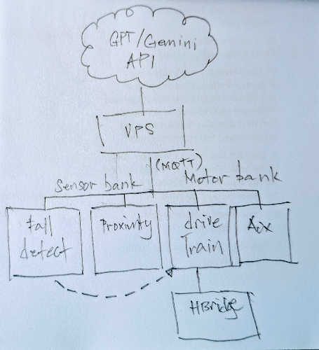
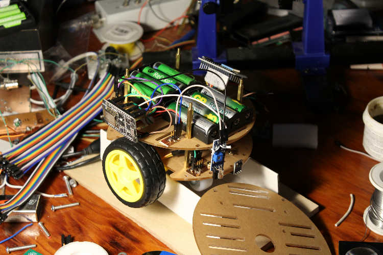

The goal of this project is to build a proof-of-concept MQTT-linked robot platform designed for expansion with minimal hardware changes as needed. Each section of the robot utilizes independent, off-the-shelf Wi-Fi modules. The VPS handles coordination between each section. For rapid response during bump and fall detection, a direct connection to the motor drive MCU triggers an IRQ.

This prototype utilizes readily available components from AliExpress. This is used to test how well each ESP32/8266 can be coordinated using MQTT. It is also used to test the RSSI fingerprinting technique of geolocation within a local region.

A single VL53LOX Time of Flight Sensor (a distance measurement sensor) was used to map the surroundings in 2D, which proved sufficient for collision avoidance. Various sensors, including a fall detection sensor, communicate with a Virtual Private Server (VPS) and directly with the motor drive Microcontroller Unit (MCU). When the fall detection sensor is triggered, an Interrupt Request (IRQ) is activated, immediately stopping the bot's movement. After the MQTT message is processed, a simple rule based AI algorithm determines the next instruction, typically a movement in the opposite direction to clear the fall sensor and remap the surroundings.
Next Steps: